Before and after
The first pass was the bare structure in grey, sized to the outside walls, to test whether the game camera works between the piers. The second picture is the finished interior from the same spot.

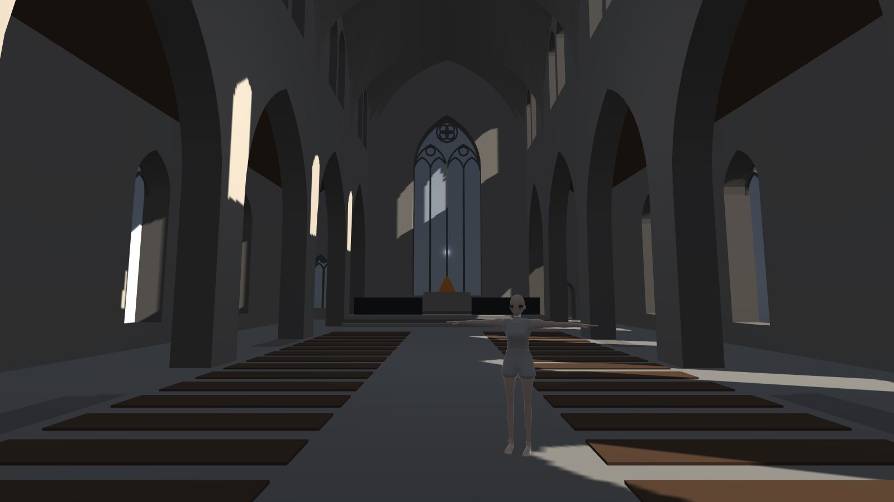


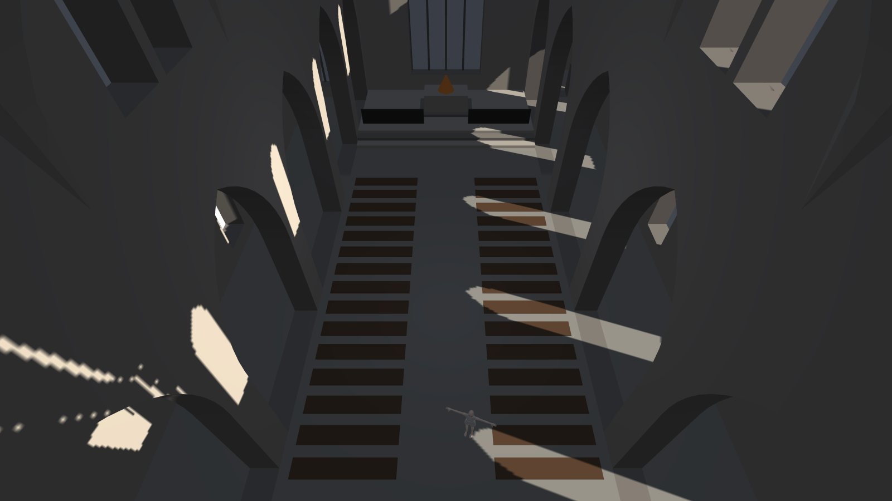

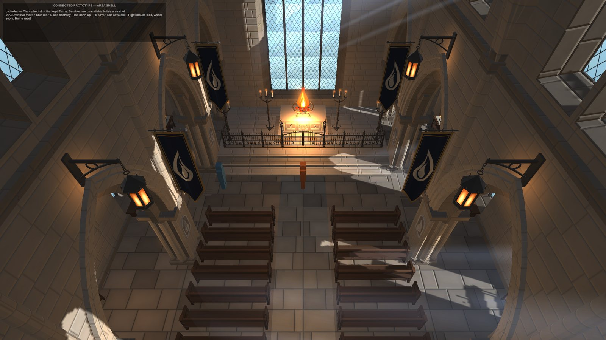
The space
Warm stone in cool morning light: sun comes through the east windows in shafts, and the candles, lanterns and the altar fire warm everything near them. When the player walks into the aisles or the porch, the game opens the walls and roof above them so the camera can see in.

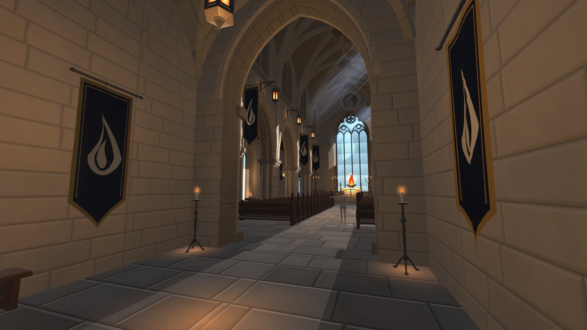

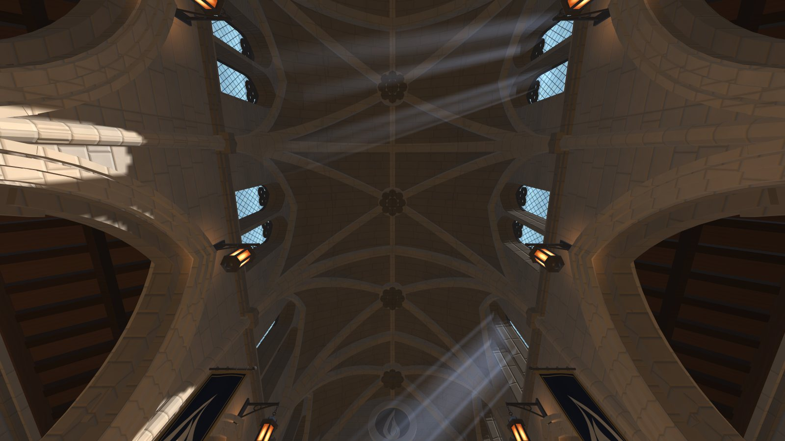

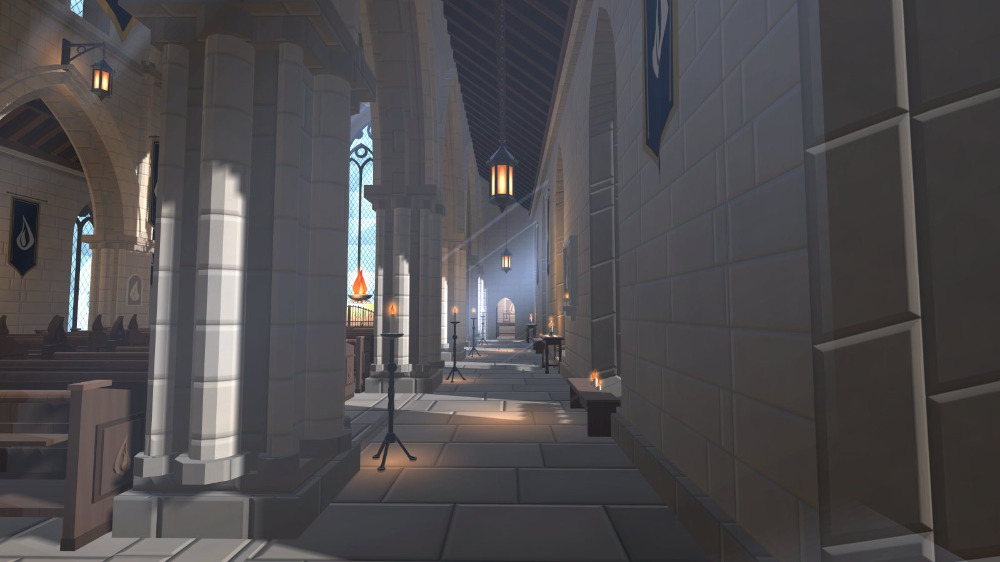

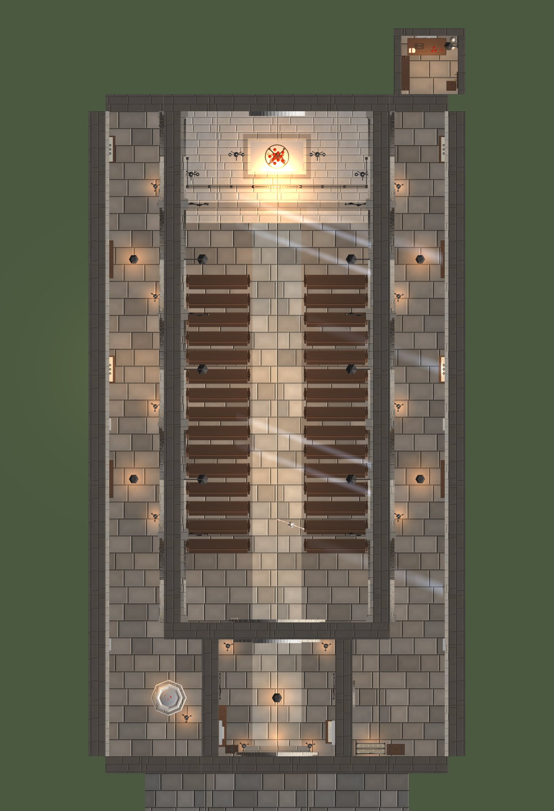
Its furnishings
Each prop was rebuilt and judged on its own, up to three times. One flame mark ties them together: it is on the banners, the pier carvings, the blank memorial tablets, the pew ends and the altar.

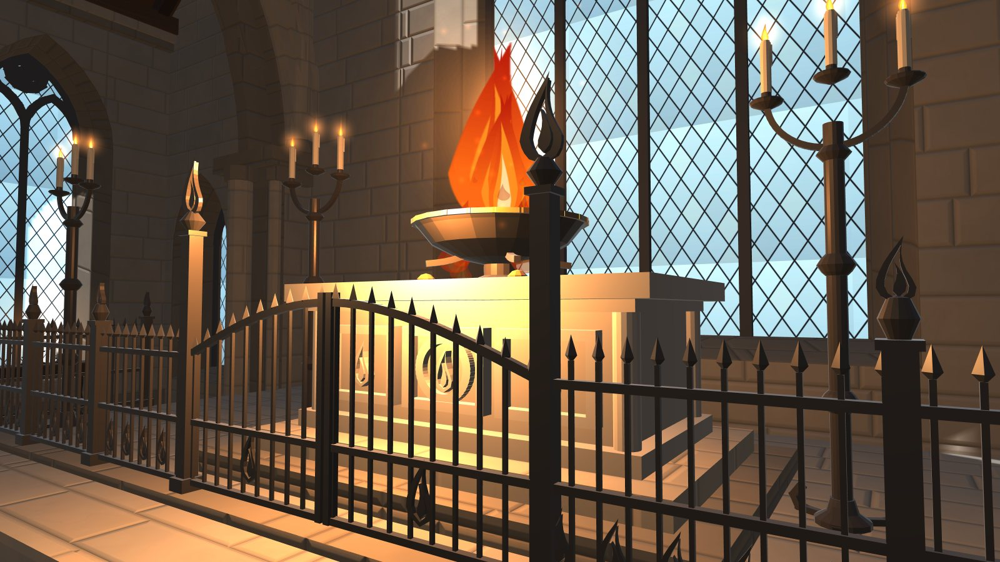

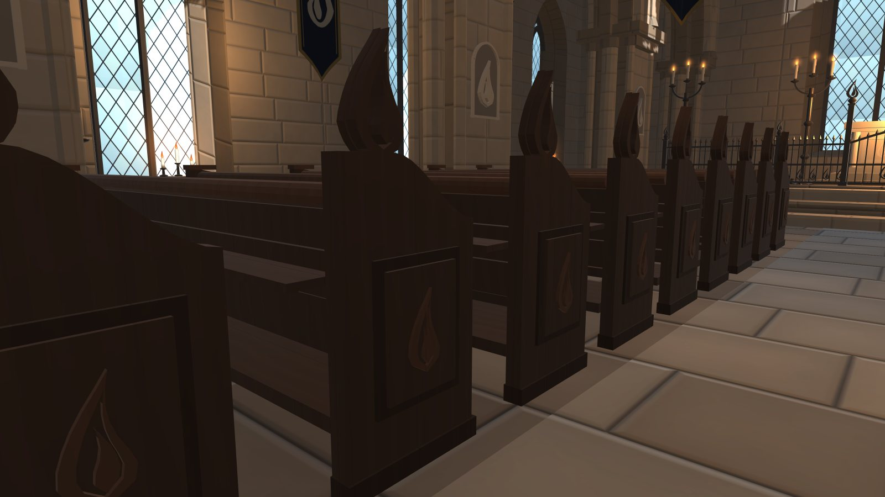

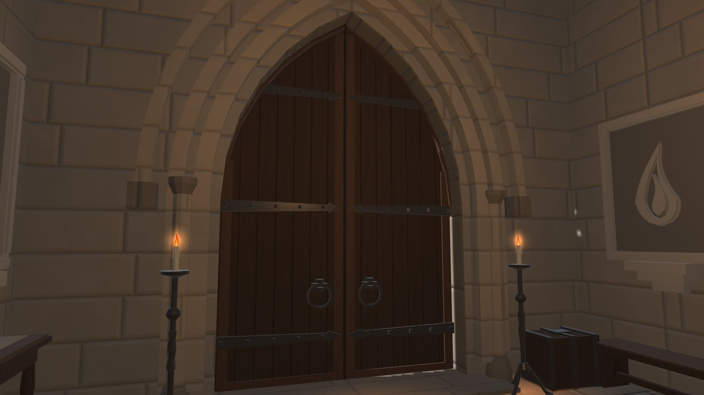

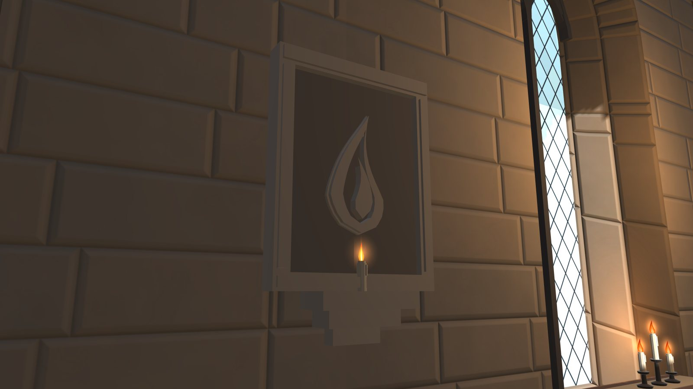

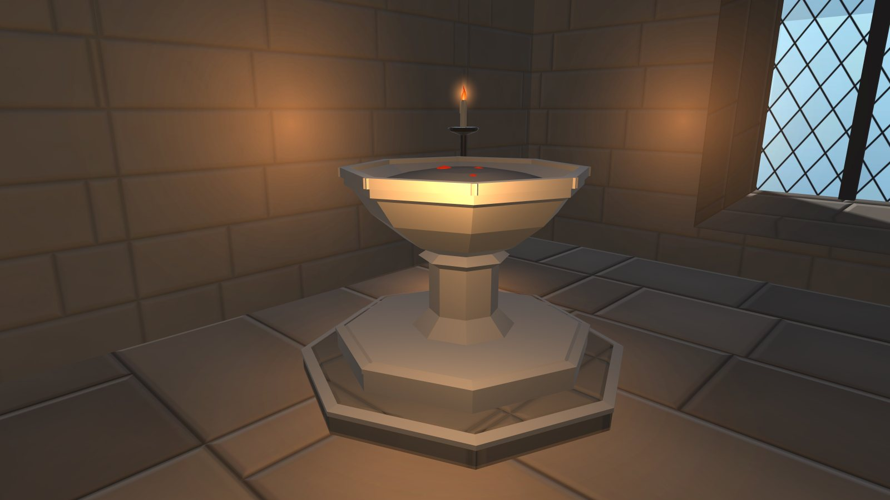

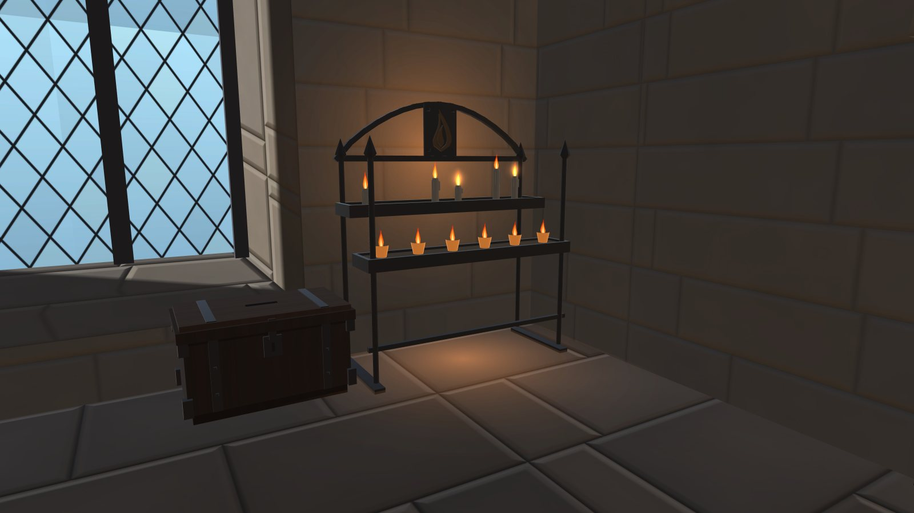

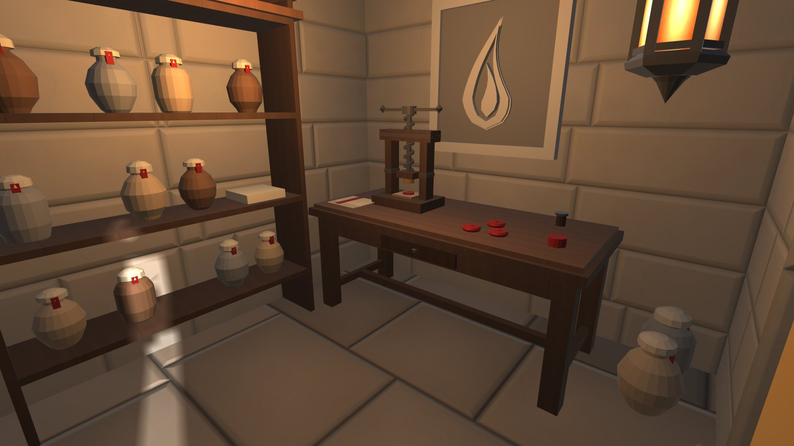

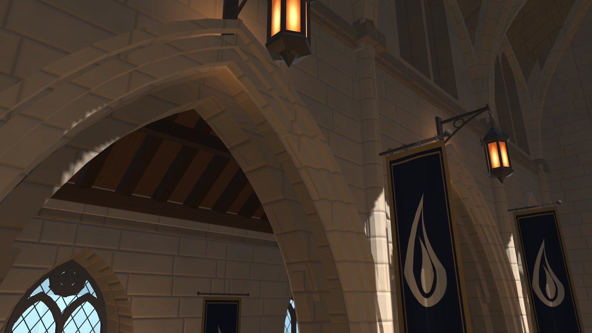
In the game
The cathedral is the tenth connected area. Walk up to its south door in the town and press E; you arrive in the porch, and the main door takes you back out. The game’s own walk test now goes town, cathedral, town as part of its route, and saving and resuming inside works.

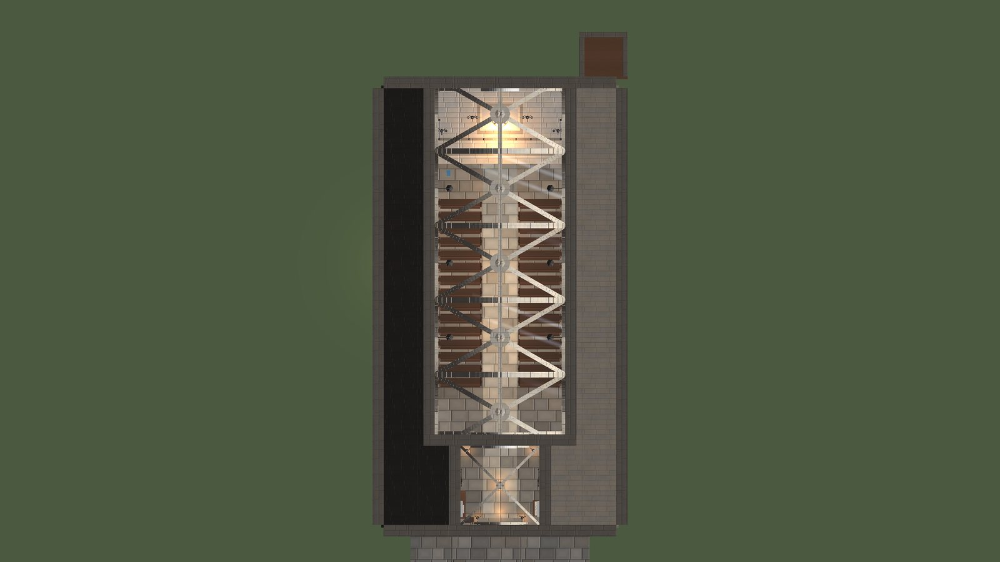
- Scores: building 7/10; lanterns 7; pews, railing, banners, door, votive rack, aisle furniture and carved stone 6; altar and sacristy 5; font 4 before its fix. The critics’ open points are mainly the fire’s movement, the iron’s sheen and the cloth’s drape.
- Cost: about 260,000 triangles and 12 lights.
- Not done: people (two empty markers wait for a keeper and a door attendant), sound, a use for the building in play.